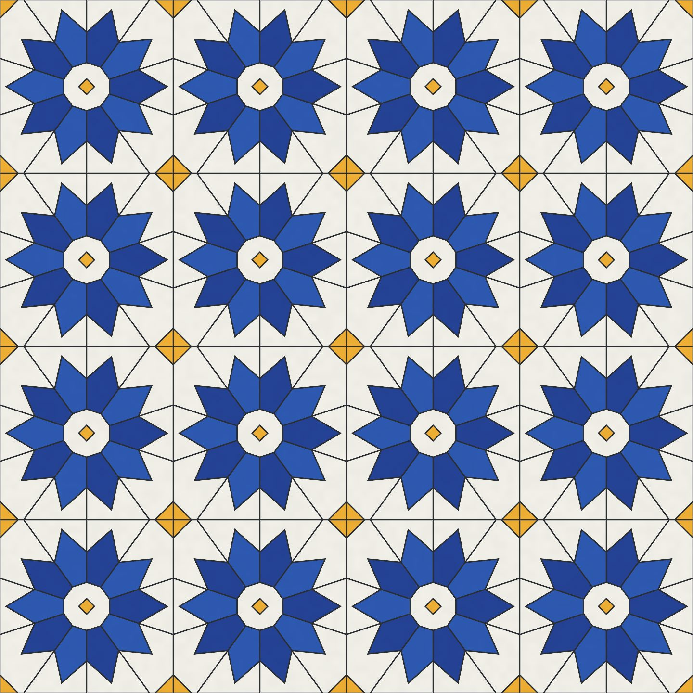
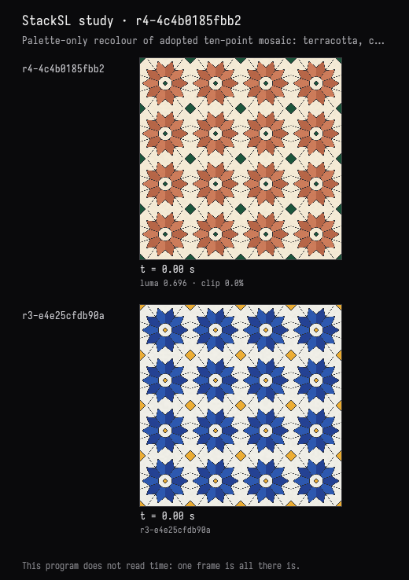
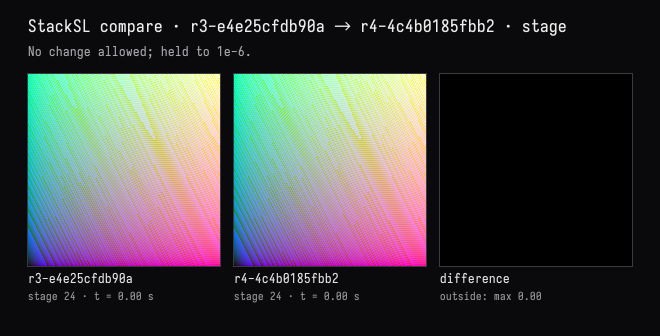
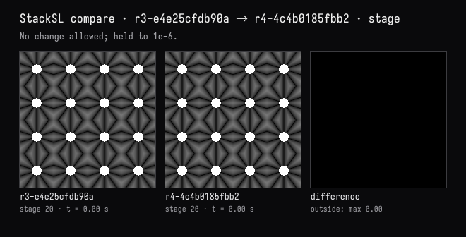
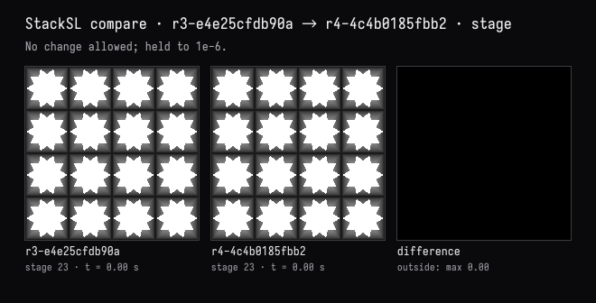
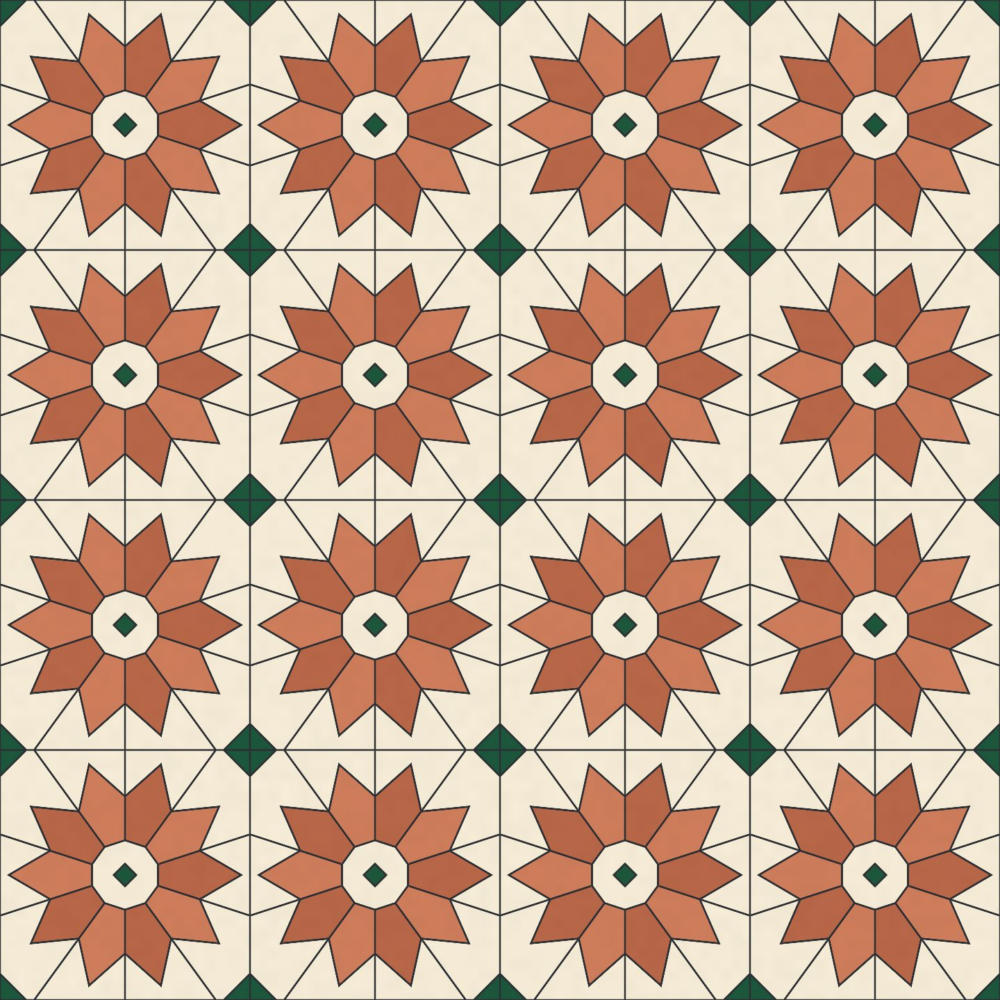

Recolour, and prove the geometry held
The recorded exchange: the request, the tool activity, every image the tools returned to the model, and its reply. Expand tool activity to read the steps; open an image to see it full size.
- Adopted variant 10 points in the study card →
r3-e4e25cfdb90a“adopt variant 10 points: Finer ten-petal rosettes; same scale, palette and grout, with a matching decagonal hub.”
I took ten points in the card. Now recolour it in terracotta, cream and a deep green instead of cobalt and saffron — but don't change the geometry at all, and prove that you didn't.
Tool activity · 13 steps
Starting AI conversation
InspectStackSLStudy finished (1 ms)
Waiting for model
Investigating tool discrepancies
Investigating tool discrepancies
I need to confirm whether the stage24 tool shows empty stores when it shouldn’t. I’m comparing it to stage23, which has a masked background but not full grout. It looks like stage24 might have an empty joint stack that could auto-return as popped. I need to inspect the tool’s implementation closely through symbols to clarify this. Getting a solid understanding will help ensure everything functions as expected.
Next tool:
CaptureRenderWindowRequestCaptureRenderWindowRequest finished (39 ms)
PatchStackSLStudy finished (653 ms)
CompareStackSLStudy finished (371 ms)
Waiting for model
Avoiding Overcomplication
Avoiding Overcomplication
I need to keep things straightforward. I’m comparing 20 catches with the petal and hub, then 23 catches with the star and background. I want the diamonds' text to remain completely unchanged — that's essential for accuracy. I should describe the numerical tests for both the petal and joint fields, but I won't cover everything entirely. Finally, I’ll make two parallel calls to get all required information efficiently. Let's make this work without any extra fuss!
Next tool:
CompareStackSLStudyCompareStackSLStudy finished (387 ms)
CompareStackSLStudy finished (367 ms)
CaptureRenderWindowRequest finished (44 ms)
Completed






Recoloured and verified live: terracotta ten-point rosettes, cream tiles, and deep-green diamonds, retaining the thin dark grout.
Geometry preservation proof - The patch changed only 15 RGB values in five colour literals, plus three descriptive comments. All geometry, masks, spacing, grout widths, and glaze calculations remain untouched. - Before/after comparisons of the petal-divider/hub field and star-masked background-joint field each returned maximum difference 0, with 0 changed samples across a 192×192 grid. Their difference images are entirely black.
Compilation and checks passed. The image remains completely still.